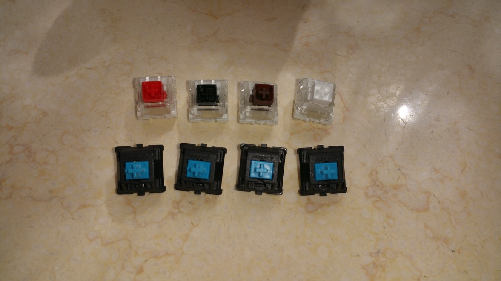
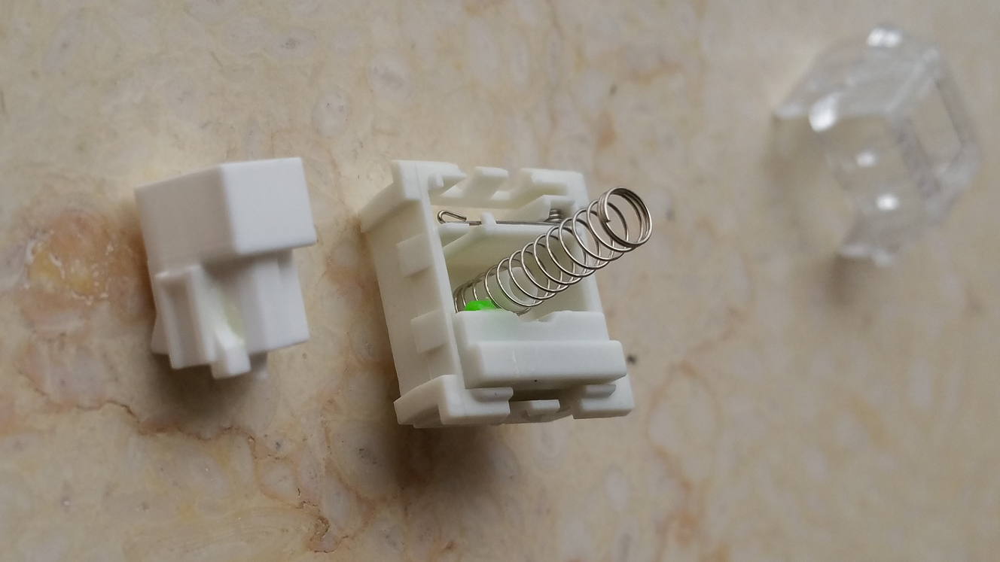
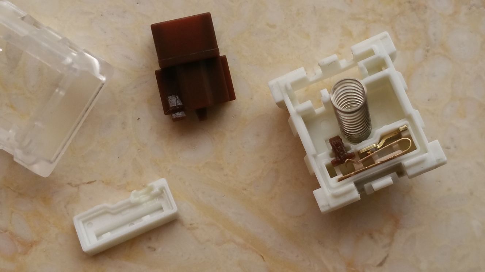
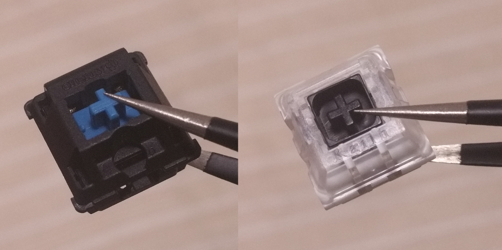
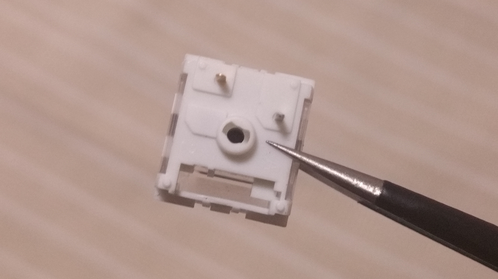
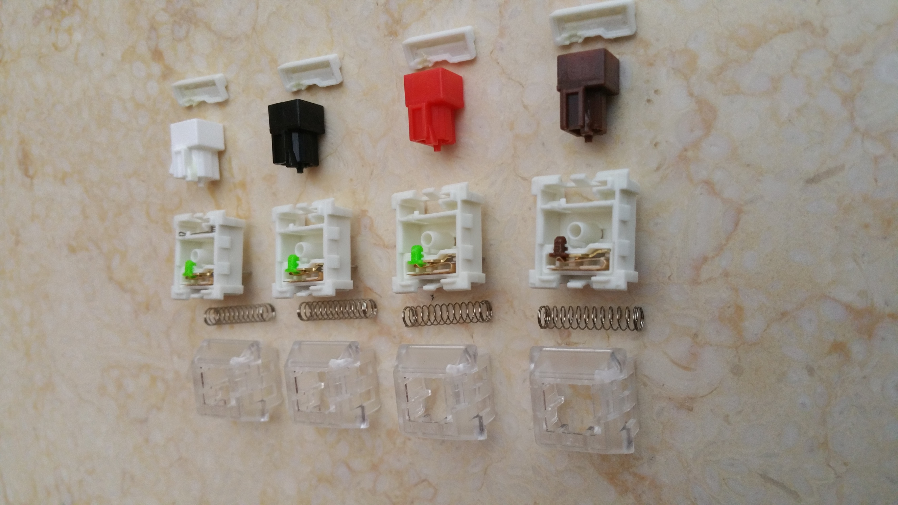

凯华 Box 轴拆解
还可以
键盘的 A 键坏了, 可能是我在 Spacemacs 里后插入用的太多的原因, 总之决定自己换轴
挑轴的时候发现卖家还卖一种叫 Box 轴的轴体, 是凯华今年一月发布, 自主研发, 主打寿命长和防水性的新系列 (这介绍真长
官网上他们自己说的是挺好
可是只有白(qīng)轴的图解, 其他轴则是一笔带过
想着反正不包邮, 不如顺便多买点, 就在买替换用轴的同时各买了一种 Box 轴

拍照水平就不要吐槽了, 下面四个是准备拿来给键盘换的 Cherry 青轴
拍的时候还忘了关闪光灯, 后面的影子是猫, 在我拍完后一爪子拍走了所有 Box 轴

白轴(他们非要说这是青轴, 只是白色的而已……), 和官网上给出的结构一样 (废话
是靠那根横着的弹簧, 他们叫扭簧, 来发声的(我特意侧着拍了轴芯, 可以看见后面有用于拨动扭簧的突起)
不过我试了试, 这根弹簧并不只管发声, 实际上大部分段落感都来源于它, 如果把它拆掉, 或者挑开, 就基本感觉不到段落感的存在
而这一部分是暴露在 "Box" 之外, 不知道经历了水和尘之后还能不能保持手感
声音的话, 是超级大, 从感觉上来讲至少比 Cherry 青轴吵个两三倍, 而且一般的青轴, 是按下去响一声, 抬起来时声音基本没有, 这个白(qīng)轴, 抬起来和按下去的声音一样大, 按一次键能明显的听出响了两声, 要是在人多的地方用怕是会被打死

茶轴, 这个轴比较特殊
和其他三个轴比, 只有它的 "小绿点" 不是绿的
原因, 据我猜测是因为它的段落感实现不是靠和白轴一样的扭簧, 是普通的在轴芯接触部分增加突起实现的(如上图)
而这个突起可能会导致轴芯或 "小绿点" 磨损的更快, 就换成了和轴芯一样的材质
但就算这样估计茶轴也是这些轴里手感损失最快的
这张照片里我把 "Box" 的盖掀开了
能看见 "小绿点" 旁边有一圈凹槽, 里面填有润滑油, 大概是用于防止水进入 "Box" 中
动片与 MX 轴不同, 变为横着的, 弯折处与触点间距离变长, 每次按键可以更小幅度的弯折动片, 增加寿命
他们官网的动画展示了触发方式:
说到防水, Box 轴的轴芯十字部分都被围了一圈, 这一圈是为了当按键按下时也不会有大量的水进入轴体:

在底部的轴柱中间有一个洞让水排出去:

然后黑轴和红轴都很普通, 轴芯都一样, 没啥好讲的就不单独拍了
最后来个合影, 可以看出每个轴芯的差别:

后记
就在我准备把键盘拆开换轴的时候, A 键又好使了……嗯……